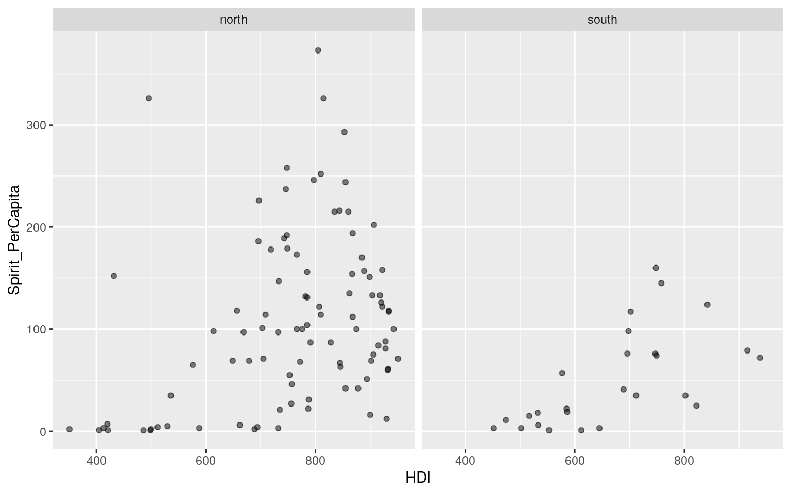
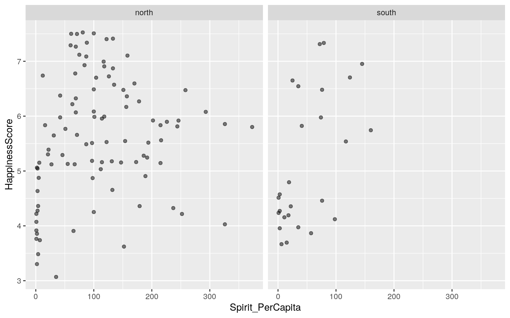
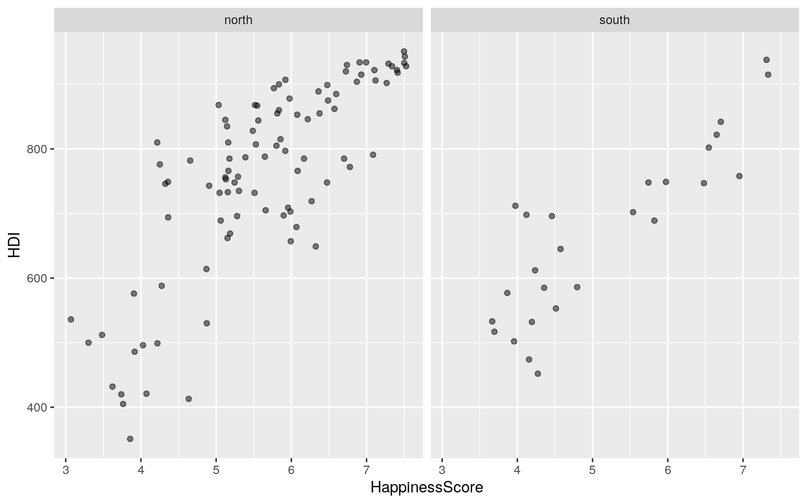
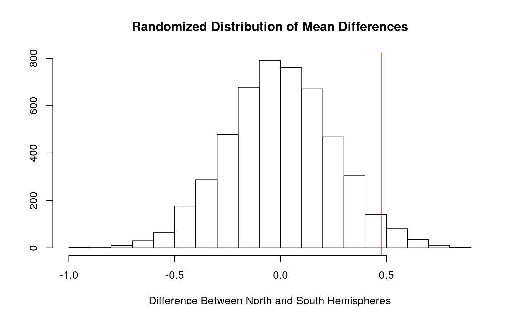
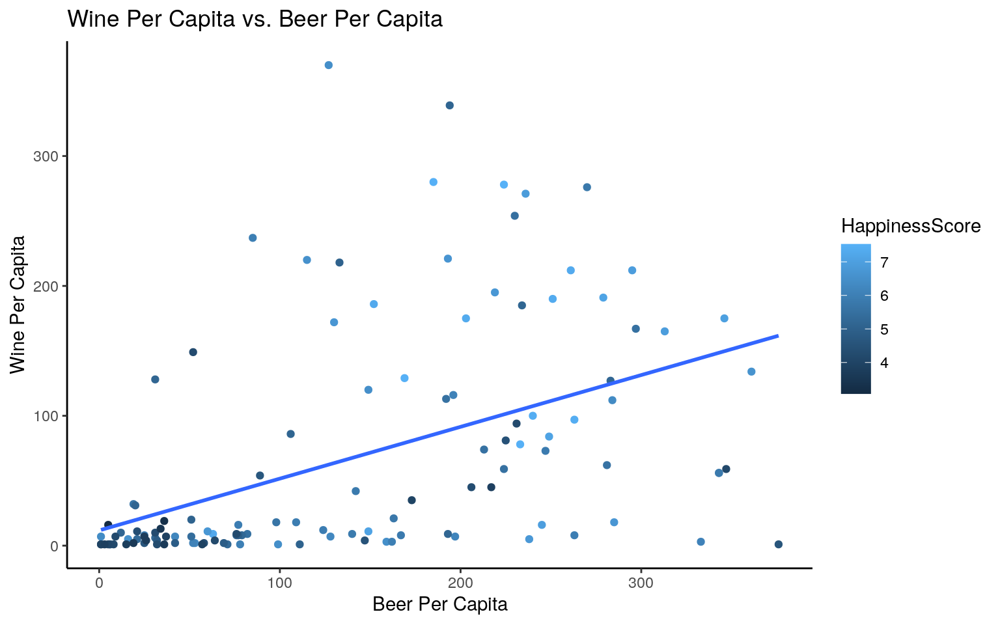
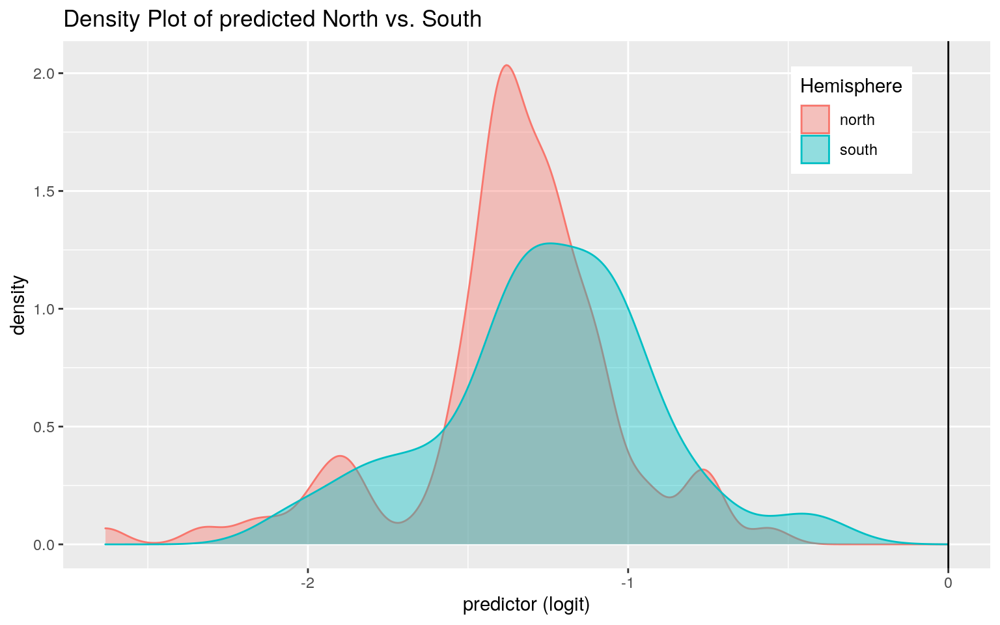
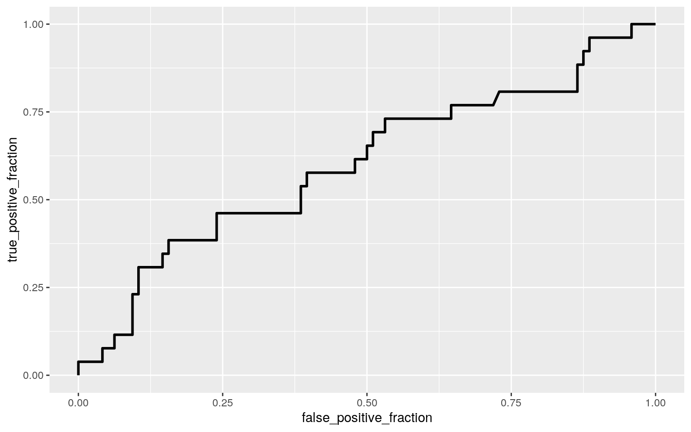

A knitted R Markdown document (preferably HTML) and the raw R Markdown file (as .Rmd) should both be submitted to Canvas by 11:59pm on the due date. These two documents will be graded jointly, so they must be consistent (i.e., don’t change the R Markdown file without also updating the knitted document). In the .Rmd file for Project 2, you can copy the first code-chunk into your project .Rmd file to get better formatting. Notice that you can adjust the opts_chunk$set(…) above to set certain parameters if necessary to make the knitting cleaner (you can globally set the size of all plots, etc). You can copy the set-up chunk in Project2.Rmd: I have gone ahead and set a few for you (such as disabling warnings and package-loading messges when knitting)!
Like before, I envision your written text forming something of a narrative structure around your code/output. All results presented must have corresponding code. Any answers/results/plots etc. given without the corresponding R code that generated the result will not be graded. Furthermore, all code contained in our project document should work properly. Please do not include any extraneous code or code which produces error messages. (Code which produces warnings is fine as long as you understand what the warnings mean.)
Find one dataset with at least 5 variables (ideally more!) that you want to use to build models/test hypotheses. At least one should be categorical (with 2-5 groups, ideally; definitely fewer than 10) and at least two should be numeric (taking on more than 10 distinct values). Ideally, at least of your variables will be binary (if not, you will have to create one by discretizing a numeric or collapsing levels of a categorical). You will need a minimum of 40 observations (at least 10 observations for every explanatory variable you have, ideally 20+ observations/variable).
It is perfectly fine to use either dataset (or the merged dataset, or a subset of your variables) from Project 1. However, I might encourage you to diversify things a bit and choose a different dataset to work with (particularly if the variables did not reveal interesting associations in Project 1 that you want to follow up with). The only requirement/restriction is that you may not use data from any examples we have done in class or lab. It would be a good idea to pick more cohesive data this time around (i.e., variables that you actually thing might have a relationship you would want to test). Think more along the lines of your Biostats project.
Again, you can use data from anywhere you want (see bottom for resources)! If you want a quick way to see whether a built-in (R) dataset has binary and/or character (i.e., categorical) variables, check out this list: https://vincentarelbundock.github.io/Rdatasets/datasets.html.
I chose a data set that collected data on Happiness and Alcohol consumption through the variables of Human Development Index, Happiness Score, GDP per Capita, Liters per Capita of Beer Consumed, Liters per Capita of Spirits Consumed, and Liters per Capita of Wine Consumed. These variables were collected by country and each country was classified by the Region and Hemisphere it was in. The data had 122 observations. I wanted to see if there was any correlation between Alcohol consumption and Happiness, as well as if the variables could predict the hemisphere of the earth the country presided in.
library(tidyverse)
data <- read.csv("~/website/content/project/HappinessAlcoholConsumption.csv")
man <- manova(cbind(HappinessScore, HDI, GDP_PerCapita, Beer_PerCapita, Spirit_PerCapita, Wine_PerCapita)~Hemisphere, data=data)
summary(man)## Df Pillai approx F num Df den Df Pr(>F)
## Hemisphere 1 0.20055 4.8082 6 115 0.0002063 ***
## Residuals 120
## ---
## Signif. codes: 0 '***' 0.001 '**' 0.01 '*' 0.05 '.' 0.1
' ' 1summary.aov(man)## Response HappinessScore :
## Df Sum Sq Mean Sq F value Pr(>F)
## Hemisphere 1 4.651 4.6508 3.6001 0.06018 .
## Residuals 120 155.020 1.2918
## ---
## Signif. codes: 0 '***' 0.001 '**' 0.01 '*' 0.05 '.' 0.1
' ' 1
##
## Response HDI :
## Df Sum Sq Mean Sq F value Pr(>F)
## Hemisphere 1 172168 172168 8.1187 0.005157 **
## Residuals 120 2544749 21206
## ---
## Signif. codes: 0 '***' 0.001 '**' 0.01 '*' 0.05 '.' 0.1
' ' 1
##
## Response GDP_PerCapita :
## Df Sum Sq Mean Sq F value Pr(>F)
## Hemisphere 1 22221 22221 0.5038 0.4792
## Residuals 120 5292420 44103
##
## Response Beer_PerCapita :
## Df Sum Sq Mean Sq F value Pr(>F)
## Hemisphere 1 3111 3111.2 0.2815 0.5967
## Residuals 120 1326277 11052.3
##
## Response Spirit_PerCapita :
## Df Sum Sq Mean Sq F value Pr(>F)
## Hemisphere 1 69864 69864 11.444 0.000969 ***
## Residuals 120 732567 6105
## ---
## Signif. codes: 0 '***' 0.001 '**' 0.01 '*' 0.05 '.' 0.1
' ' 1
##
## Response Wine_PerCapita :
## Df Sum Sq Mean Sq F value Pr(>F)
## Hemisphere 1 6145 6144.5 0.7899 0.3759
## Residuals 120 933469 7778.9pairwise.t.test(data$HappinessScore, data$Hemisphere, p.adj="none")##
## Pairwise comparisons using t tests with pooled SD
##
## data: data$HappinessScore and data$Hemisphere
##
## north
## south 0.06
##
## P value adjustment method: nonepairwise.t.test(data$HDI, data$Hemisphere, p.adj="none")##
## Pairwise comparisons using t tests with pooled SD
##
## data: data$HDI and data$Hemisphere
##
## north
## south 0.0052
##
## P value adjustment method: nonepairwise.t.test(data$Spirit_PerCapita, data$Hemisphere, p.adj="none")##
## Pairwise comparisons using t tests with pooled SD
##
## data: data$Spirit_PerCapita and data$Hemisphere
##
## north
## south 0.00097
##
## P value adjustment method: none1 - (0.95 ^ 10)## [1] 0.4012631(0.05/10)## [1] 0.005I ran a MANOVA to determine if Hemisphere has an effect on each of the other variables. Of all the variables, three were significant. I ran pairwise t-tests on all three of the variables that were significant, HappinessScore, HDI, and Spirit_PerCapita. It was found that there was a significant difference in HDI and Spirit_PerCapita between countries in the north and south hemispheres. There were 10 test run, meaning that the probability of at least one type I error would be about 0.4. The adjusted significance level is 0.005. With the new significance level, the difference in Spirit_PerCapita is the only variable still significant.
ggplot(data, aes(x = HDI, y = Spirit_PerCapita)) +
geom_point(alpha = .5) + facet_wrap(~Hemisphere)
ggplot(data, aes(x = Spirit_PerCapita, y = HappinessScore)) +
geom_point(alpha = .5) + facet_wrap(~Hemisphere)
ggplot(data, aes(x = HappinessScore, y = HDI)) +
geom_point(alpha = .5) + facet_wrap(~Hemisphere) When running MANOVAs, it is important to maintain the check the assumptions that the data is randomly sampled with independent observations and that the dependent variables is multivariately normal. I graphed out the variables against the hemispheres and it does not look like the data is multivariately normal.
Null Hypothesis: The mean happiness score is the same between countries within the northern versus southern hemispheres Alternative Hypothesis: The mean happiness score is different between countries within the northern versus southern hemispheres
mean(data[data$Hemisphere == "north",]$HappinessScore) - mean(data[data$Hemisphere == "south",]$HappinessScore)## [1] 0.4767837r_dist <- vector()
for (i in 1:5000){
new <- data.frame(HappinessScore=sample(data$HappinessScore), hemi = data$Hemisphere)
r_dist[i] <- mean(new[new$hemi=="north",]$HappinessScore) - mean(new[new$hemi=="south",]$HappinessScore)
}
mean(r_dist > 0.4767837) * 2## [1] 0.0628The randomization test produced a p-value of 0.062, which is greater than 0.05, The concludes that there is not a significant difference in mean happiness score between countries within the northern versus southern hemispheres.
{hist(r_dist, main="Randomized Distribution of Mean Differences", ylab="",
xlab="Difference Between North and South Hemispheres");
abline(v=0.4767837, col="red")} The histogram shows that the difference in means is within the histogram which shows that there is a moderate likelihood of there being no difference in means between countries in the northern hemisphere and the southern hemisphere.
3. (40 pts) Build a linear regression model predicting one of your response variables from at least 2 other variables, including their interaction. Mean-center any numeric variables involved in the interaction.
ggplot() using geom_smooth(method=“lm”). If your interaction is numeric by numeric, refer to code in the slides to make the plot or check out the interactions package, which makes this easier. If you have 3 or more predictors, just chose two of them to plot for convenience. (10)coeftest(..., vcov=vcovHC(...)). Discuss significance of results, including any changes from before/after robust SEs if applicable. (10)library(lmtest)
library(sandwich)
data$Beer_PerCapita_c <- data$Beer_PerCapita - mean(data$Beer_PerCapita)
data$Wine_PerCapita_c <- data$Wine_PerCapita - mean(data$Wine_PerCapita)
linear <- lm(HappinessScore ~ Beer_PerCapita_c * Wine_PerCapita_c, data=data)
summary(linear)##
## Call:
## lm(formula = HappinessScore ~ Beer_PerCapita_c *
Wine_PerCapita_c,
## data = data)
##
## Residuals:
## Min 1Q Median 3Q Max
## -2.21284 -0.69145 0.06484 0.69003 2.25063
##
## Coefficients:
## Estimate Std. Error t value Pr(>|t|)
## (Intercept) 5.542e+00 1.071e-01 51.740 < 2e-16 ***
## Beer_PerCapita_c 3.889e-03 9.841e-04 3.952 0.000132 ***
## Wine_PerCapita_c 3.796e-03 1.263e-03 3.006 0.003237 **
## Beer_PerCapita_c:Wine_PerCapita_c -3.926e-06 1.411e-05
-0.278 0.781275
## ---
## Signif. codes: 0 '***' 0.001 '**' 0.01 '*' 0.05 '.' 0.1
' ' 1
##
## Residual standard error: 0.9702 on 118 degrees of
freedom
## Multiple R-squared: 0.3044, Adjusted R-squared: 0.2867
## F-statistic: 17.21 on 3 and 118 DF, p-value: 2.453e-09After running a linear regression, it appears that for every 1 Liter per Capita increase in Beer Consumption the Happiness Score increases by 3.889e-03, for every 1 Liter per Capita increase in Wine Consumption the Happiness Score increases by 3.796e-03. When accounting for the interaction between Wine and Beer consumption, a 1 liter increase in both decreases the Happiness Score by 3.926e-06.
ggplot(data, aes(x=Beer_PerCapita, y=Wine_PerCapita))+geom_point(aes(color=HappinessScore))+
geom_smooth(method="lm", se=F, fullrange=T, aes(color=HappinessScore))+
ggtitle("Wine Per Capita vs. Beer Per Capita")+
xlab("Beer Per Capita")+ylab("Wine Per Capita")+theme_classic()
res <- linear$residuals
shapiro.test(res)##
## Shapiro-Wilk normality test
##
## data: res
## W = 0.98859, p-value = 0.4045bptest(linear)##
## studentized Breusch-Pagan test
##
## data: linear
## BP = 1.1838, df = 3, p-value = 0.7569When running a linear regression, it’s also important to check the assumptions of independent observations, random sampling, normally distributed residuals, and equal variances. From the graph, we can see that the data has a loose linear relationship. We also obtained a p-value of 0.4 (>0.05) from our Shapiro-Wilk normality test, meaning that we must fail to reject the null hypothesis that the data is normal. Finally, from our studentized Breusch-Pagan test we obtained a p-value of 0.76 (> 0.05), which means we must fail to reject the null hypothesis that the data is homoskedasktic.
coeftest(linear, vcov = vcovHC(linear))##
## t test of coefficients:
##
## Estimate Std. Error t value Pr(>|t|)
## (Intercept) 5.5419e+00 1.0731e-01 51.6428 < 2.2e-16 ***
## Beer_PerCapita_c 3.8893e-03 1.0092e-03 3.8540 0.0001896
***
## Wine_PerCapita_c 3.7960e-03 1.1633e-03 3.2631 0.0014419
**
## Beer_PerCapita_c:Wine_PerCapita_c -3.9262e-06 1.2183e-05
-0.3223 0.7478152
## ---
## Signif. codes: 0 '***' 0.001 '**' 0.01 '*' 0.05 '.' 0.1
' ' 1summary(linear)$r.sq## [1] 0.3043975I ran the same regression with robust standard errors and found that the p-values for all of the variables decreased slightly, with the exception of only Beer_PerCapita increasing slightly. The same variables were significant in both regressions. The proportion of variance explained by the model is 0.3044.
sample_dist <- replicate(5000, {
bootstrapped <- data[sample(nrow(data), replace=TRUE),]
boot <- lm(HappinessScore ~ Beer_PerCapita_c * Wine_PerCapita_c, data = bootstrapped)
coef(boot)
})
sample_dist %>% t %>% as.data.frame %>% summarize_all(sd)## (Intercept) Beer_PerCapita_c Wine_PerCapita_c
Beer_PerCapita_c:Wine_PerCapita_c
## 1 0.1053459 0.0009736406 0.001179459 1.206227e-05The bootstrapped standard errors were slightly lower for the intercept, Wine Per Capita,and the interaction between Beer and Wine Per Capita, but slightly higher for Beer Per Capita seperately.
5. (30 pts) Fit a logistic regression model predicting a binary variable (if you don’t have one, make/get one) from at least two explanatory variables (interaction not necessary).
class_diag<-function(probs,truth){
tab<-table(factor(probs>.5,levels=c("FALSE","TRUE")),truth)
acc=sum(diag(tab))/sum(tab)
sens=tab[2,2]/colSums(tab)[2]
spec=tab[1,1]/colSums(tab)[1]
ppv=tab[2,2]/rowSums(tab)[2]
if(is.numeric(truth)==FALSE & is.logical(truth)==FALSE) truth<-as.numeric(truth)-1
#CALCULATE EXACT AUC
ord<-order(probs, decreasing=TRUE)
probs <- probs[ord]; truth <- truth[ord]
TPR=cumsum(truth)/max(1,sum(truth))
FPR=cumsum(!truth)/max(1,sum(!truth))
dup<-c(probs[-1]>=probs[-length(probs)], FALSE)
TPR<-c(0,TPR[!dup],1); FPR<-c(0,FPR[!dup],1)
n <- length(TPR)
auc<- sum( ((TPR[-1]+TPR[-n])/2) * (FPR[-1]-FPR[-n]) )
data.frame(acc,sens,spec,ppv,auc)
}library(plotROC)
logistic <- glm(Hemisphere ~ Beer_PerCapita + Wine_PerCapita, data = data, family = binomial(link="logit"))
exp(coeftest(logistic))##
## z test of coefficients:
##
## Estimate Std. Error z value Pr(>|z|)
## (Intercept) 0.24155 1.45135 0.0221 1.000
## Beer_PerCapita 1.00263 1.00236 3.0481 1.304
## Wine_PerCapita 0.99583 1.00332 0.2837 1.231For every 1 liter increase of beer consumed per capita, the odds of the country being in the southern hemisphere increases by 1. For every 1 liter increase of wine consumed per capita, the odds of the country being in the southern hemisphere increases by about 0.996.
data$prob<-predict(logistic,type="response")
data$pred<-ifelse(data$prob>0.5,"north","south")
table(prediction=as.numeric(data$prob>.5),truth=data$Hemisphere)%>%addmargins## truth
## prediction north south Sum
## 0 96 26 122
## Sum 96 26 122class_diag(data$prob, data$Hemisphere)## acc sens spec ppv auc
## south 0.7868852 0 1 NaN 0.6007612data$logpred<-predict(logistic, type="link")
data%>%ggplot()+geom_density(aes(logpred,color=Hemisphere,fill=Hemisphere), alpha=.4)+
theme(legend.position=c(.85,.85))+geom_vline(xintercept=0)+ggtitle("Density Plot of predicted North vs. South")+xlab("predictor (logit)")
ROCplot <- ggplot(data) + geom_roc(aes(d = Hemisphere, m = prob), n.cuts = 0)
ROCplot
calc_auc(ROCplot)## PANEL group AUC
## 1 1 -1 0.6007612The accuracy of the model is 0.787. The sensitivity of the model is 0. The specificity of the model is 1. The precision of the model is Not a Number. Finally, the AUC of the model is 0.60, which means our model is kind of poor at predicting the hemisphere in which the country resides.
6. (25 pts) Perform a logistic regression predicting the same binary response variable from ALL of the rest of your variables (the more, the better!)
lambda.1se). Discuss which variables are retained. (5)library(glmnet)
logistic2 <- glm(Hemisphere ~ HappinessScore + HDI + GDP_PerCapita + Beer_PerCapita + Spirit_PerCapita + Wine_PerCapita, data = data, family = binomial)
exp(coeftest(logistic2))##
## z test of coefficients:
##
## Estimate Std. Error z value Pr(>|z|)
## (Intercept) 25.44240 6.31012 5.7942 1.082
## HappinessScore 1.20465 1.48440 1.6022 1.892
## HDI 0.99199 1.00405 0.1367 1.048
## GDP_PerCapita 0.99851 1.00133 0.3270 1.302
## Beer_PerCapita 1.01151 1.00381 20.3231 1.003
## Spirit_PerCapita 0.98275 1.00669 0.0736 1.009
## Wine_PerCapita 1.00078 1.00412 1.2076 2.341data$prob<-predict(logistic2,type="response")
data$pred<-ifelse(data$prob>0.5,"north","south")
table(prediction=as.numeric(data$prob>.5),truth=data$Hemisphere)%>%addmargins## truth
## prediction north south Sum
## 0 91 20 111
## 1 5 6 11
## Sum 96 26 122class_diag(data$prob, data$Hemisphere)## acc sens spec ppv auc
## south 0.795082 0.2307692 0.9479167 0.5454545 0.8108974I ran a logistic regression predicting hemisphere from the rest of my variables. I found that for every one unit increase in the happiness score the odds of the country residing in the southern hemisphere increased by 1.2. When HDI increased by one unit, the odds of the country residing in the southern hemisphere increased by 0.99. When GDP_PerCapita increased by one unit, the odds of the country residing in the southern hemisphere increased by 0.99, as well. When Beer_PerCapita, the odds of the country residing in the southern hemisphere increased by 1.0. When Spirit_PerCapita increased by one unit, the odds of the country residing in the southern hemisphere increased by 0.98. Finally, a one unit increase in Wine_PerCapita caused the odds of the country residing in the southern hemisphere to increase by 1.0. The accuracy for the mode was about 0.8. The sensitivity was about 0.23 for the model. The specificity was about 0.95 for the model. The precision for the model was about 0.54. Finally, the AUC for the model was 0.81, which means our model is a fair predictor of hemisphere.
set.seed(1234)
k=10
data1<-data[sample(nrow(data)),]
folds<-cut(seq(1:nrow(data)),breaks=k,labels=F)
diags<-NULL
for(i in 1:k){
train<-data1[folds!=i,]
test<-data1[folds==i,]
truth<-test$Hemisphere
fit<-glm(Hemisphere~HappinessScore + HDI + GDP_PerCapita + Beer_PerCapita + Spirit_PerCapita + Wine_PerCapita, data=train, family=binomial(link="logit"))
probs<-predict(fit,newdata = test,type="response")
diags<-rbind(diags,class_diag(probs,truth))
}
summarize_all(diags,mean)## acc sens spec ppv auc
## 1 0.7878205 0.3083333 0.9340404 NaN 0.7892782After running a k-fold CV, I found that the accuracy of the model was about 0.787, the sensitivity of the model was about 0.31, the specificity was about 0.93, the precision was not a number, and finally the AUG was bout 0.79, which was a light decrease from the original regression.
mat<-model.matrix(logistic2)
y<-as.matrix(data$Hemisphere)
x<-as.data.frame(mat) %>% dplyr::select(-1) %>% as.matrix
cv<-cv.glmnet(x,y, family = "binomial")
lasso<-glmnet(x,y, family = "binomial",lambda=cv$lambda.1se)
coef(lasso)## 7 x 1 sparse Matrix of class "dgCMatrix"
## s0
## (Intercept) -0.3560076133
## HappinessScore .
## HDI -0.0007504704
## GDP_PerCapita .
## Beer_PerCapita .
## Spirit_PerCapita -0.0046198490
## Wine_PerCapita .After running a LASSO on the regression, it was found that the two variables that are the best predictors of hemisphere were HDI and Spirit_PerCapita.
set.seed(1234)
k=10
data1<-data[sample(nrow(data)),]
folds<-cut(seq(1:nrow(data)),breaks=k,labels=F)
diags<-NULL
for(i in 1:k){
train<-data1[folds!=i,]
test<-data1[folds==i,]
truth<-test$Hemisphere
fit<-glm(Hemisphere~HDI + Spirit_PerCapita, data=train, family=binomial(link="logit"))
probs<-predict(fit,newdata = test,type="response")
diags<-rbind(diags,class_diag(probs,truth))
}
summarize_all(diags,mean)## acc sens spec ppv auc
## 1 0.7538462 0 0.9614646 NaN 0.7254672Finally, I ran another k-fold CV and found that the accuracy was slightly lower in this model with a value of 0.754. The sensitivity of the model was 0, the specificity of the model was 0.96, the precision of the model was not a number, and finally the AUC was about 0.73, which is a decrease from the original model.